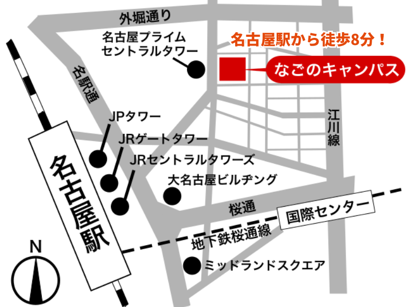
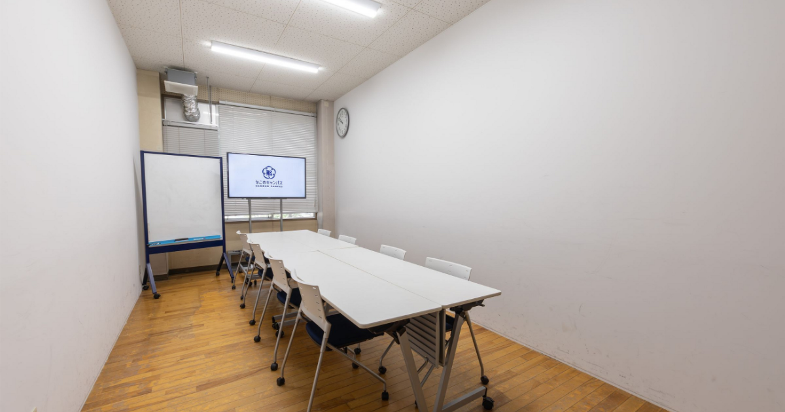
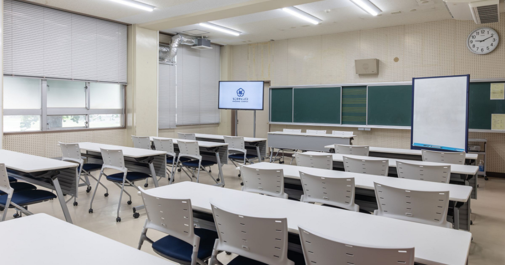

毎回テーマ制
その回の目的が明確になるように、毎回ひとつのテーマを決めて実施します。
コンセプト
なごNotionは名古屋駅から徒歩8分の場所にある「なごのキャンパス」で定期開催しているNotionの対面型の勉強会です。誰でも自由に無料で参加可能です。
できることは聞いたことや見たことがある
使ってはいるが周りが言うほどの利便性を実感できていない
他では体験できなかった便利さを実感している
目的に合わせて、自分で自由に実装できる
なごNotionが担うのは「使ってる」から「使えてる」の状態へステップアップする橋渡し役です。
なごやか、なごNotion〜♪
特徴
その回の目的が明確になるように、毎回ひとつのテーマを決めて実施します。
短い時間でも効率よく進められるよう対面で実施します。
小さく長く継続して学べるよう無料で実施します。
直接聞ける場所があるのは嬉しい！
おすすめ
話には聞くけれど触れていない状態から、自分の生活や仕事で使えるイメージをつかみます。
なんとなく触っている状態から、自分なりに「使えてる」と手応えを感じることができます。
どんな仕組みでなにができるかの構造を理解し、目的から逆算して組み立てる視点を得られます。
チャットで聞いて終わりにせず、蓄積した情報をAIでフル活用する使い方を身につけます。
個人利用にとどまらず、チームや仕組みに展開していく道筋を示します。
Notionを学びたい気持ちがあることが大事！
会場
なごのキャンパス
愛知県名古屋市西区那古野2丁目14-1
「名古屋駅」桜通口より徒歩8分

Googleマップを開く
※施設に駐車場はございません。
※部屋については人数に合わせて別途連絡します。


小学校をリノベーションした施設です〜🎶
主催者
ジョウホウソース株式会社
愛知県名古屋市を拠点に活動。出身は岡山県真庭市。
PMO（プロジェクトマネジメントオフィス）として、企業向けのプロジェクトマネジメントの改善やNotion導入・トレーニングを専門に活動。
実家が醤油やであることから伝統・文化を大事にしている企業の発展にも力を入れています。
参加情報
よくある質問
申込
何か1つでも実務に活かせる気づきやノウハウを持ち帰ってもらうことを各会の目的にしています。
ご参加お待ちしています！
日程が合わない方も、次回開催のご案内や運営からのお知らせを公式LINEでお届けします。